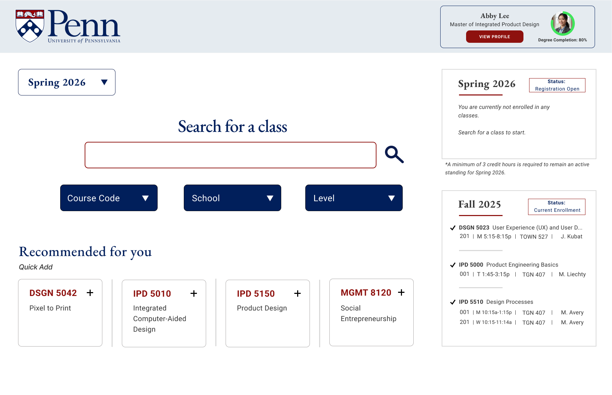
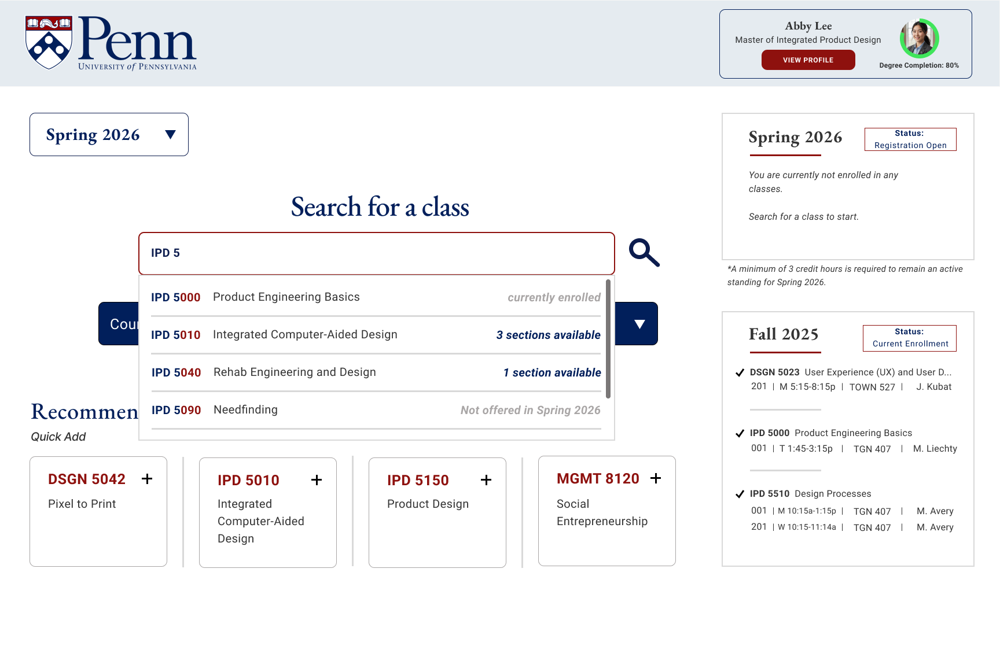
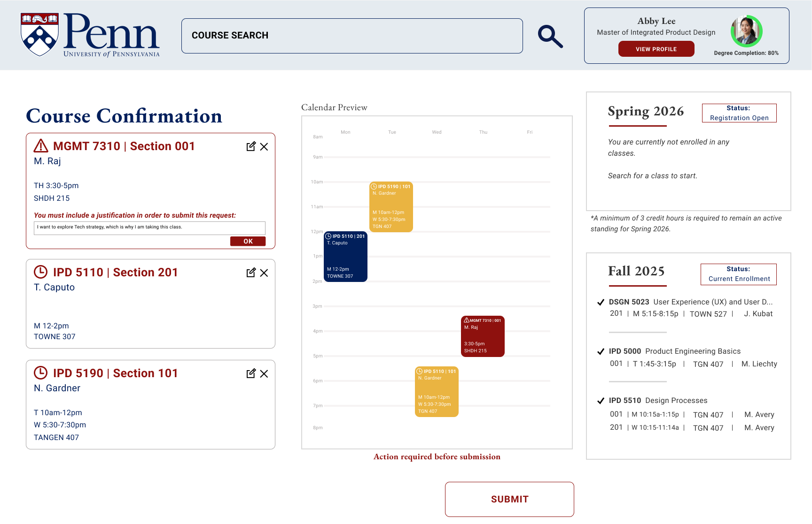

Final Design
I ended up going with Design Consideration #2 as the foundation, but combined the best parts of both directions. The result is a search-centered experience with the calendar integrated as a live preview, so students can see how courses fit into their schedule in real-time as they browse and add them.
Featured Screens
Landing Page
The landing page puts the search bar front and center with only the filters students actually need (based on interview findings). A "Recommended for you" section allows quick course additions, while the semester sidebar shows current enrollment and registration status at a glance.

Course Search + Availability
As students type in the search bar, results populate instantly with real-time availability indicators like "3 sections available", "currently enrolled", or "Not offered in Spring 2026". This way, students know exactly what's open before they even click into a course.

Course Listing
Each course page is designed to feel like a product listing, inspired by e-commerce interfaces that students are already familiar with. The calendar preview sits alongside course details so students can always see how a section fits into their week. Section cards clearly show availability, and prominent "Add to Plan" and "Go to Checkout" buttons make the next step obvious.
Course Confirmation
One of the biggest pain points from research was that students couldn't tell if their course registration actually went through. The redesigned confirmation page solves this with clear status labels for each course, whether it's registered, pending approval, or requires a justification. Warning messages stand out so students always know where they stand before and after submitting.

Course confirmation page with justification prompt for courses requiring approval

Post-submission view with clear registration status and pending approval indicators
Final Flow
The complete registration experience from start to finish, across all 10 screens.
Swipe to view all screens →
Design Details
📅
Calendar as the anchor
The schedule preview is always visible alongside course details, so students can plan around their week in real time.
🛒
Checkout-style flow
Course confirmation mirrors e-commerce patterns students already know, reducing the learning curve to near zero.
🟢
Clear status indicators
Color-coded labels like "Added to Plan", "Section Full", and "Request Required" give students confidence at every step.
✨
Only what you need
Redundant features removed, navigation simplified, and the interface shows only what's relevant to the current task.